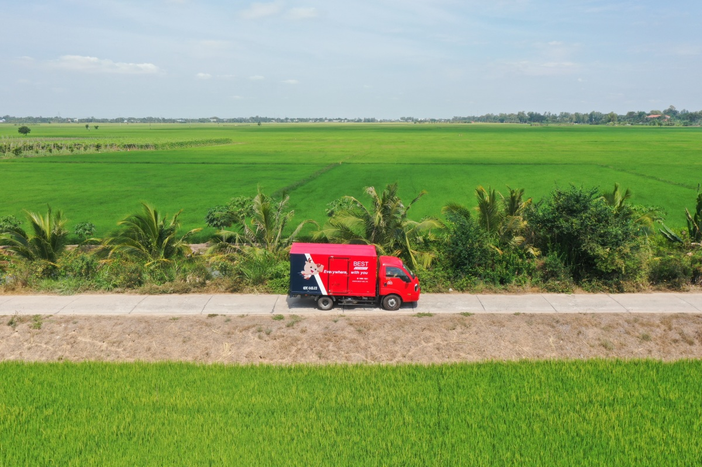
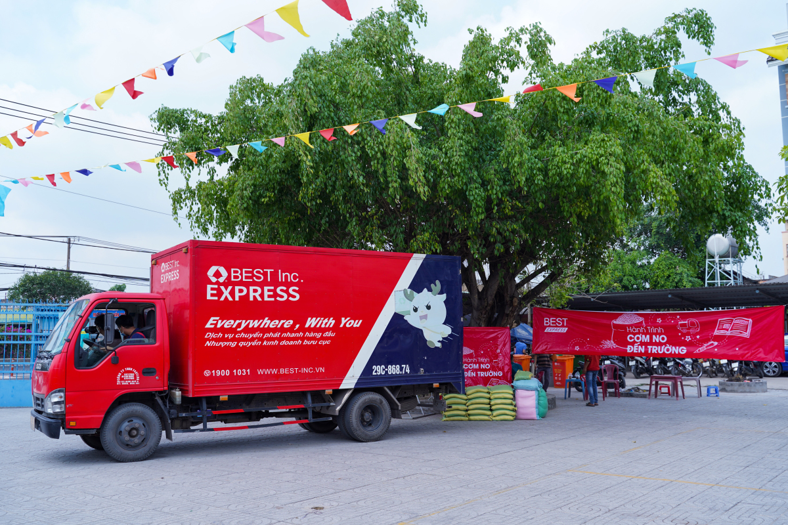
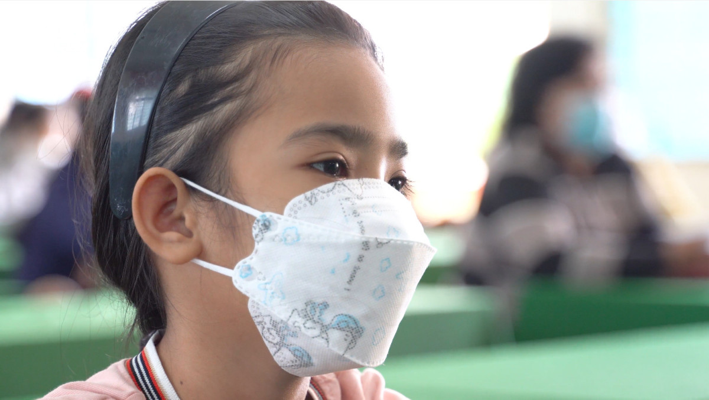
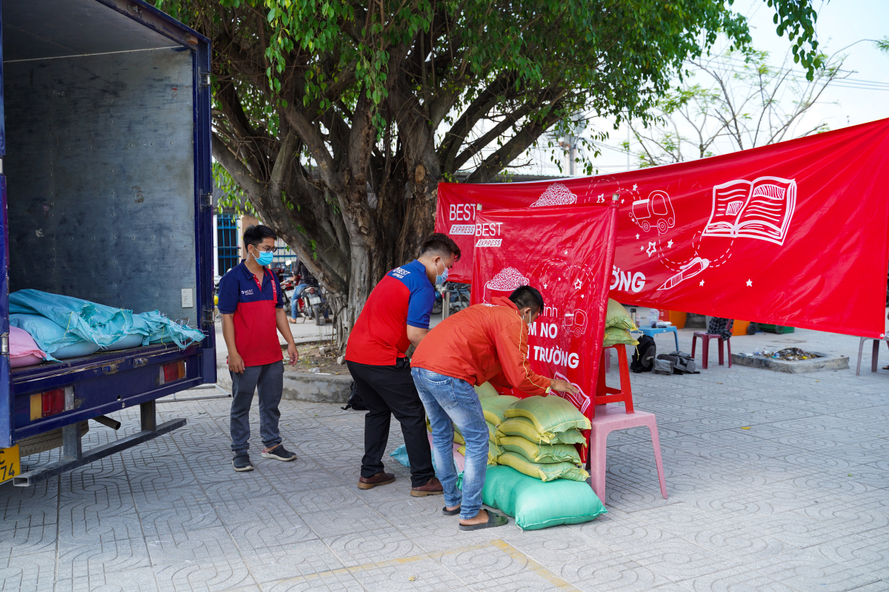
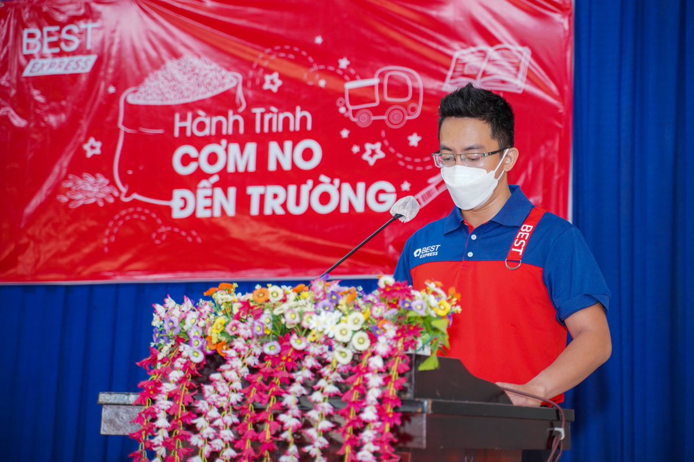
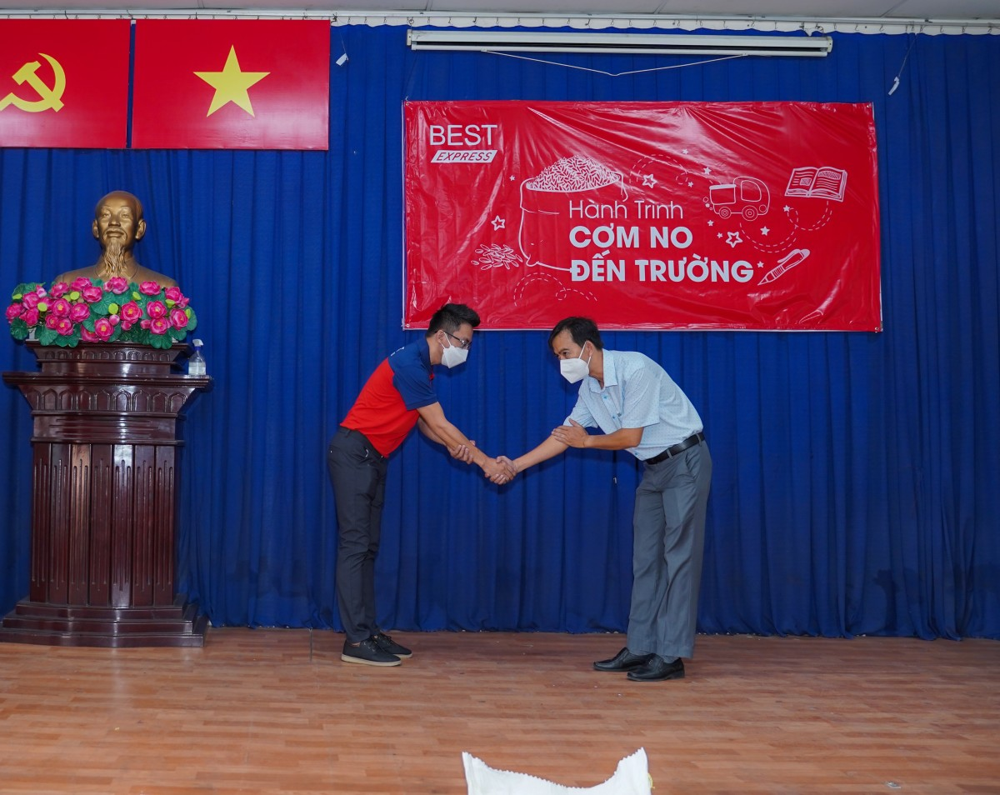
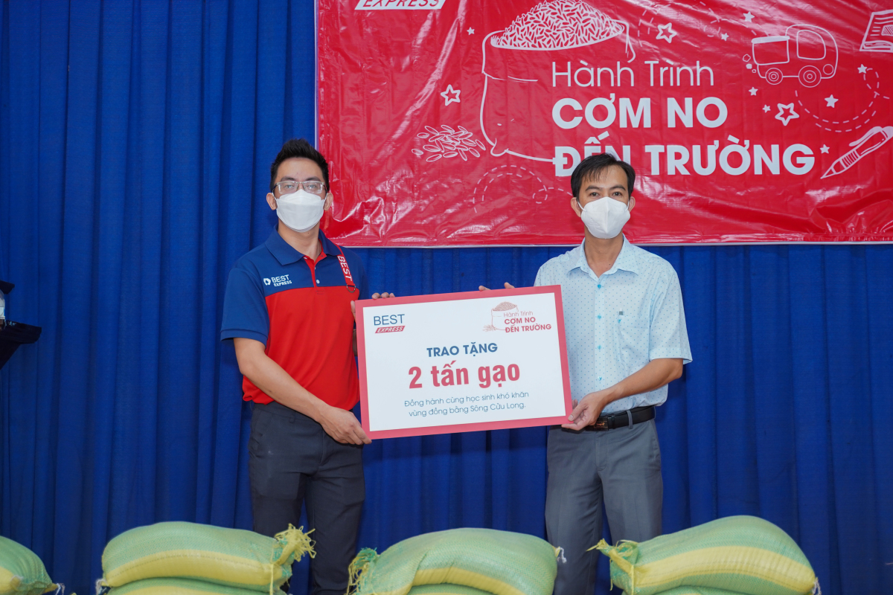
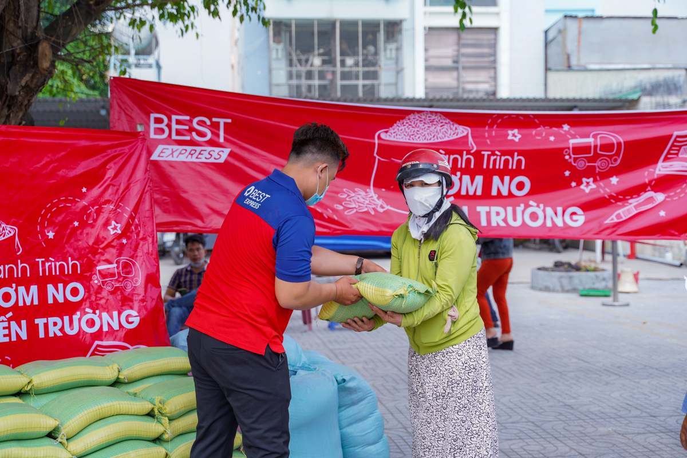
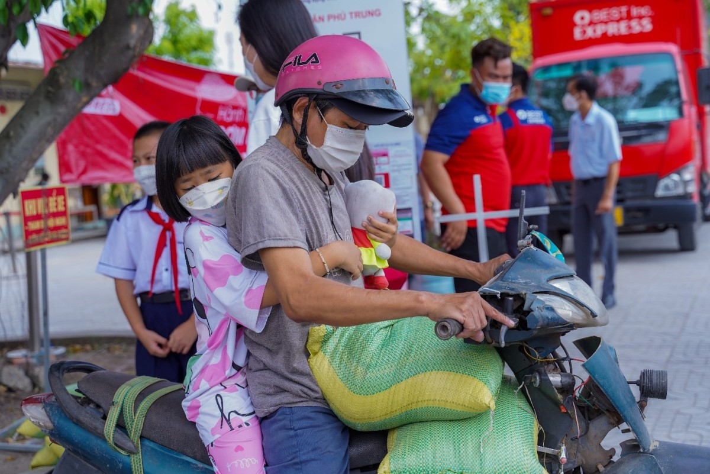

BEST Express kết thúc hành trình ‘Cơm no đến trường’ phía Nam
23/03/2022
Củ Chi là điểm đến cuối cùng tại khu vực phía Nam của hành trình thiện nguyện vì trẻ nghèo - “Cơm no đến trường” do BEST Express phát động.
Mới đây, hành trình đưa gạo và nhu yếu phẩm đến hỗ trợ hoàn cảnh khó khăn tại 5 tỉnh Đồng bằng sông Cửu Long, bao gồm cả điểm cuối cực Nam Tổ quốc, chắp cánh ước mơ tri thức cho nhiều em nhỏ miền Tây sông nước vừa hoàn thành. BEST Express tiếp tục di chuyển đến Củ Chi, TP HCM, điểm dừng cuối cùng tại miền Nam của chương trình thiện nguyện “Cơm no đến trường”.
Với sự hỗ trợ của chính quyền xã Tân Phú Trung, Củ Chi, BEST Express tiếp tục mang gạo tiếp sức cho các em học sinh nghèo nơi đây.
Giữa TP HCM náo nhiệt, vẫn có những khu vực khó khăn với nhiều em nhỏ sống trong cảnh thiếu thốn, bữa đói, bữa no. Một vài em còn mất người thân từ sớm. Những hộ gia đình khác lại thất nghiệp do sức khỏe không cho phép... khiến tỷ lệ trẻ đến trường trong khu vực ngày càng giảm.
Di chuyển hơn 300 km từ Cà Mau về Sài Gòn ngay trong đêm, đội ngũ BEST dù thấm mệt sau hành trình dài vẫn cố gắng có mặt từ sớm. Cả đội tranh thủ vác gạo vào hội trường cho kịp giờ trao tặng, tránh để các em học sinh và người dân tại đây đợi lâu.

Hầu hết các em nhỏ nhận hỗ trợ trong hành trình “Cơm no đến trường” tại TP HCM lần này đều đang học cấp 1 và 2 tại trường Tiểu học - THCS Tân Phú Trung, Củ Chi. Nhờ sự giúp đỡ của các cấp lãnh đạo Ủy ban Nhân dân xã Tân Phú Trung lên danh sách và điều phối, mọi người đều có mặt từ sớm để hoạt động trao tặng diễn ra đúng thời gian dự kiến.
Tại buổi trao tặng, ông Trần Văn Minh, đại diện BEST Express cho biết đến nay đơn vị đã tổ chức thành công hành trình “Cơm no đến trường” tại 5 tỉnh ĐBSCL.
“Tại TP HCM, chúng tôi muốn tiếp tục đưa hoạt động ý nghĩa đến với những người cần hỗ trợ, giúp thêm nhiều em nhỏ an tâm đến trường, học tập và có tương lai tốt đẹp hơn. Đội ngũ BEST Express sẽ tiếp tục đồng hành và tổ chức nhiều hoạt động trợ giúp, để trẻ em và người dân khó khăn trên cả nước có cuộc sống đủ đầy hơn”, ông Minh nói thêm.
Đồng thời, ông Minh cũng gửi lời cảm ơn đến Ban lãnh đạo xã Tân Phú Trung vì đã không ngừng quan tâm, giúp đỡ chương trình thiện nguyện “Cơm no đến trường” diễn ra thành công cũng như hỗ trợ hoạt động kinh doanh của BEST Express trong những năm gần đây.
“Chúng tôi rất cảm ơn và quý trọng tấm lòng của BEST Express, đã hỗ trợ hai tấn gạo cho các em học sinh và gia đình hoàn cảnh có khăn tại địa phương. Những phần quà của đơn vị sẽ giúp em nhỏ và bà con bớt nhọc nhằn trong sinh hoạt hơn. Chúng tôi rất hoan nghênh và sẵn sàng đồng hành cùng đơn vị trong những hành trình thiện nguyện sắp tới”, đại diện Ủy ban Nhân dân xã Tân Phú Trung cho biết.
Không chỉ học sinh, gia đình các em cũng vui mừng khi nhận quà trợ giúp từ chương trình. Chị Nguyễn Thị Kim Chi, phụ huynh học sinh lớp 1 trường tiểu học Tân Phú Trung bày tỏ sự biết ơn và hạnh phúc khi biết gia đình chị trong diện hỗ trợ của xã và chưogn trình “Cơm no đến trường”.
“Cảm ơn các anh chị đã đến và trợ giúp bà con tại đây. Dịch bệnh làm cuộc sống ai cũng bấp bênh. Chỉ mong có sức khỏe, được cơm no, áo ấm để còn đi làm, nuôi các cháu ăn học”, chị Chi chia sẻ.
Kết thúc hành trình tại các tỉnh phía Nam, đội ngũ viên BEST Express kỳ vọng có thể tiếp tục mở rộng quy mô chương trình ra nhiều tỉnh, thành trên cả nước, giúp thêm nhiều em nhỏ khó khăn.
“Chúng tôi mong mỗi trẻ đều có cuộc sống bình yên, hạnh phúc, cơm no, áo ấm và được đến trường học tập. BEST Express cam kết sẽ tiếp tục theo đuổi sứ mệnh mang niềm vui đến với các em trên khắp mọi miền đất nước”, đại diện BEST Express chia sẻ.